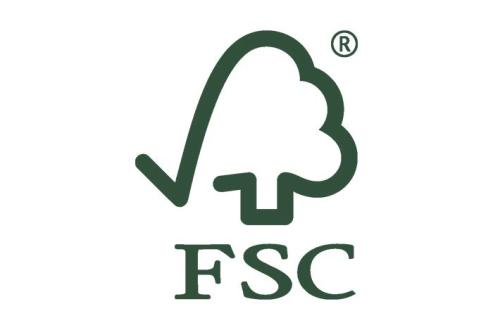

FSC

O selo FSC (Forest Stewardship Council) é uma certificação para produtos de origem florestal.
Ele sinaliza que o produto foi obtido de forma sustentável, sob critérios ambientais e sócio-econômicos.
O selo FSC (Forest Stewardship Council) é uma certificação para produtos de origem florestal.
Ele sinaliza que o produto foi obtido de forma sustentável, sob critérios ambientais e sócio-econômicos.